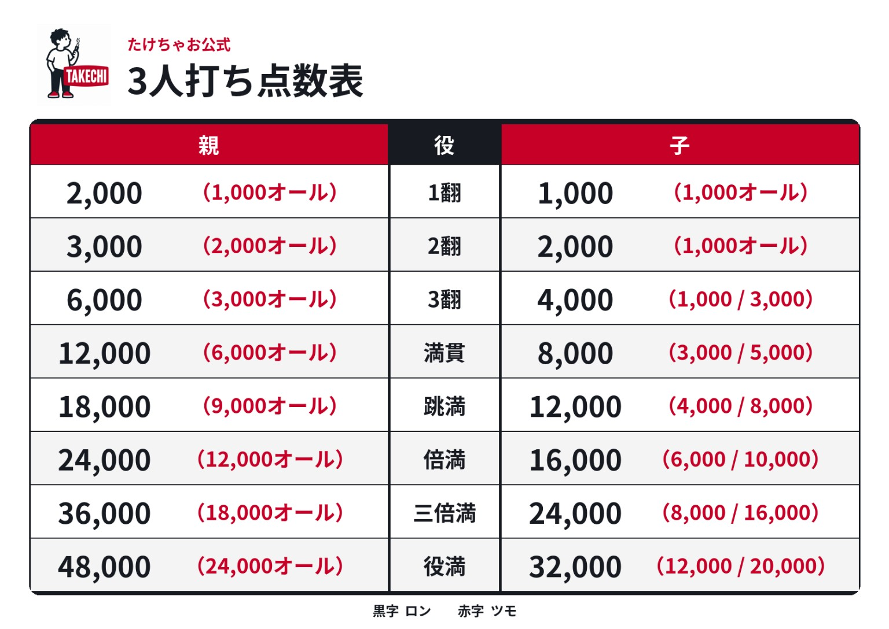
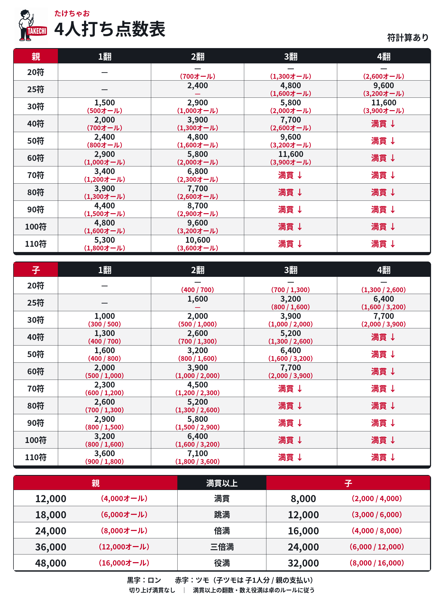

たけちゃお公式ルールブック
三人打ち｜第1版・2026年9月28日
対局ルール
進行と終了
- 東南戦。35,000点持ち、40,000点返し。
- 親はテンパイ連荘。形式テンパイも可。
- トビでゲーム終了。0点ちょうどは続行するが、リーチはできない。
- 途中流局なし。3人がリーチしても続行。ダブロンあり。積棒は上家取りで、1本場は1,000点。
- オーラスは和了止め・テンパイ止めあり。
和了・ドラ
- ツモ損なし、符計算なし、ツモピンあり。喰いタン・後付けあり。パオなし。
- 5筒・5索はドラ扱いで、赤はそれぞれ2枚。花牌あり。
- 4枚使いのチートイツあり。数え役満は13翻から。
- 特殊役満は、原文では「マンズ混一色・人和・流し」を挙げ、全4種類としている。残る1種類の名称は原文に記載なし。
- フリテンリーチ・フリテンツモあり。同巡でもツモ可。
- 白ポッチはリーチ後オールマイティ。裏ドラをめくった後、最も高い点数になる牌として扱える。
チップ獲得条件
- 赤・冬・裏ドラは枚数分。
- 一発は1枚。飛ばしは3枚。
- 役満はツモなら5枚オール、ロンなら10枚。役満でも赤や裏ドラの分を加える。
ペナルティ
アガリ放棄
その局は和了・発声不可。流局時はノーテン扱い。
- 誤ロン・誤ツモで手牌を倒さなかった場合。1,000点供託。
- 晒し間違いのまま打牌した場合。
- 少牌・多牌。6巡目の打牌まではセーフ。
- 喰い替え。
チョンボ
跳満払い。親がチョンボした場合は、オーラス以外で親流れ。
- 誤ロン・誤ツモで手牌を倒した場合。
- ノーテンリーチ後に流局した場合。
- リーチ後にカンできない牌をカンして和了、または流局した場合。
- 局の途中で、続行できないほど山や河を崩した場合。
誤ポンで鳴いた場合は1,000点供託。
マナー
- 同卓者が笑えるユーモアのある煽りはOK。
- 暴力団関係者、および原文で「そのような風貌の方」とされる方の入店はお断り。
勝ち負けよりも、愉快に楽しく麻雀をする。
公式点数表

4人打ち点数表（符計算あり）

ルールブックを編集（管理者用）
本文を編集して保存すると、閲覧者にも公開されます。保存には管理者のDBログインが必要です。
編集データを確認中…